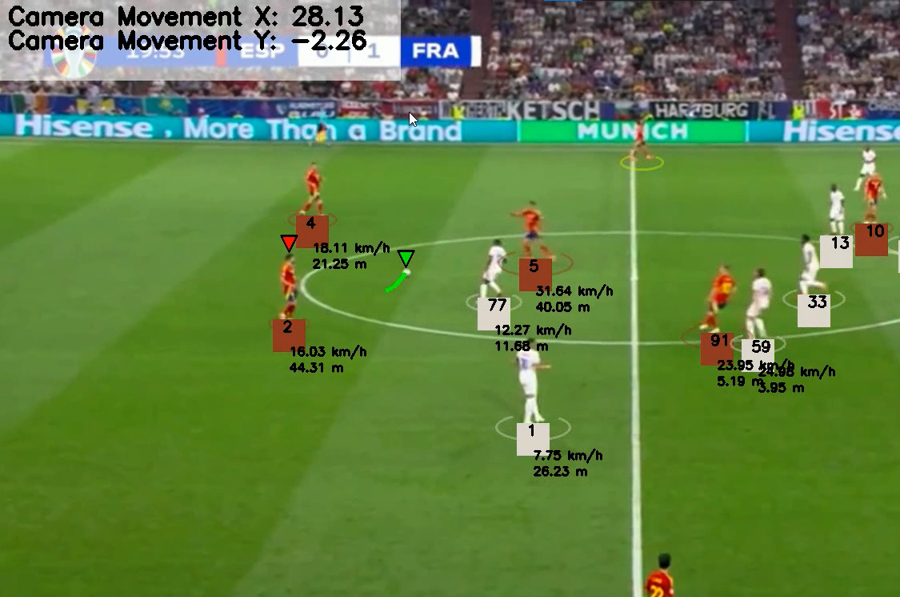

AI · Computer Vision
Documented
Football Tracking
An offline computer-vision pipeline that processes Spain–France match footage into an annotated video. It detects players, referees, and the ball, maintains track identities, and layers possession, camera movement, speed, and distance onto the output.
 Python
Python- YOLO
 OpenCV
OpenCV- ByteTrack
- Role
- Developer
- Type
- Offline CV pipeline
- Focus
- Detection & tracking

Overview
Problem & motivation
Broadcast footage contains the action, but not reusable movement data. The project turns match frames into visible identities, ball state, possession context, and player movement overlays.
My role
I assembled the modular Python workflow for detection, identity tracking, camera compensation, team assignment, possession, movement estimates, and annotated video export.
What was built
A repeatable batch pipeline that reads a local match video, applies the trained detector and tracking stages, enriches the resulting positions, and writes an annotated AVI for review.
- Detect players, referees, and the ball while maintaining player and referee track IDs.
- Group player kit colors into two teams and stabilize ball-possession changes across frames.
- Adjust positions for camera motion and perspective before adding speed and distance overlays.
Inside the Build
- Input
- OpenCV reads the Spain–France MP4 into frames and later writes the annotated XVID output.
- Detection
- A fine-tuned Ultralytics YOLO model detects the football classes; goalkeeper detections are normalized into the player class for later analysis.
- Tracking
- Supervision ByteTrack maintains player and referee identities, while missing ball boxes are interpolated and backfilled with Pandas.
- Analysis
- Optical flow estimates camera motion, a perspective transform adjusts positions, and KMeans kit colors support team and possession overlays.
Detection & identity
Analysis & output
Challenges & Takeaways
Technical challenge
The ball is small, fast, and not detected reliably in every frame, so isolated detections leave gaps in its position and can make possession switch abruptly.
How it was addressed
Missing ball boxes are interpolated and backfilled, the overlay keeps a short trail, and the last assigned team is retained when a frame has no valid player assignment.
Specific takeaway
Frame-by-frame detection was only the starting point. Stable match information required temporal state, smoothing, and camera-aware position handling.
Future improvement
Move the frame rate, calibration points, paths, thresholds, and ID overrides into per-video configuration, then evaluate detection and tracking against labeled sequences.
INPUTinput_videos/Spain_vs_France 2024.mp4Raw match footage read by the pipelineTRACKSstubs/track_stubs.pklCached object detections and identitiesCAMERAstubs/camera_movement_stub.pklCached optical-flow camera estimatesOUTPUToutput_videos/output_video.aviAnnotated video written by the main workflowNo automated test suite or quantitative accuracy results are published. This visual documents a real output frame and committed execution artifacts, not a measured performance claim.